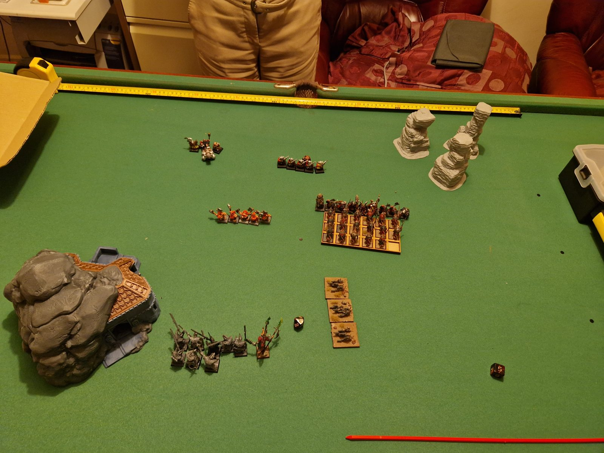
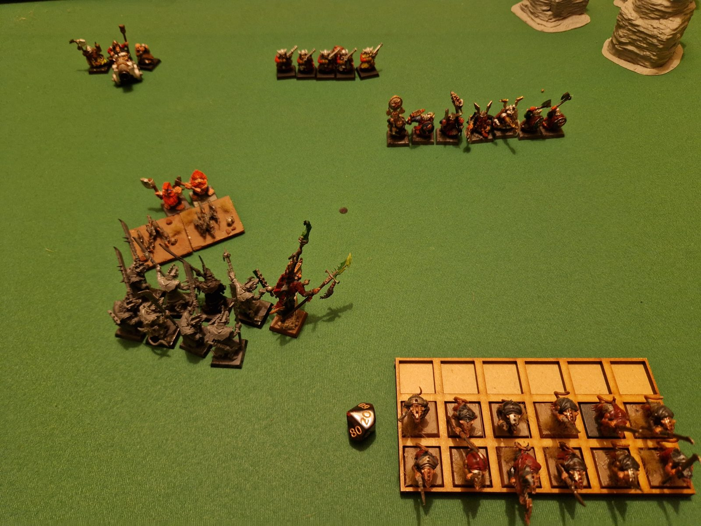
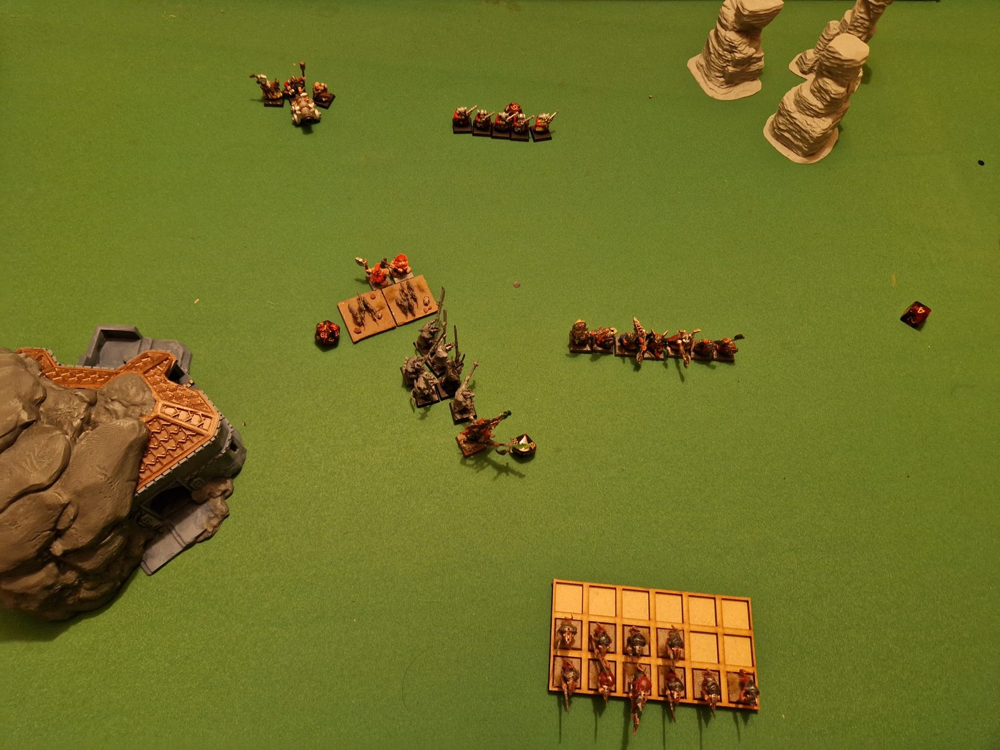
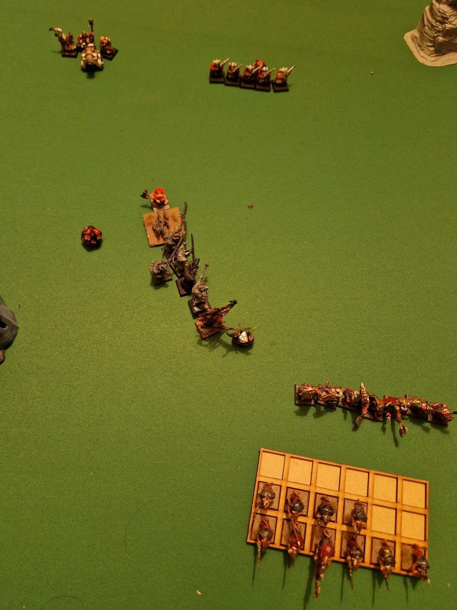
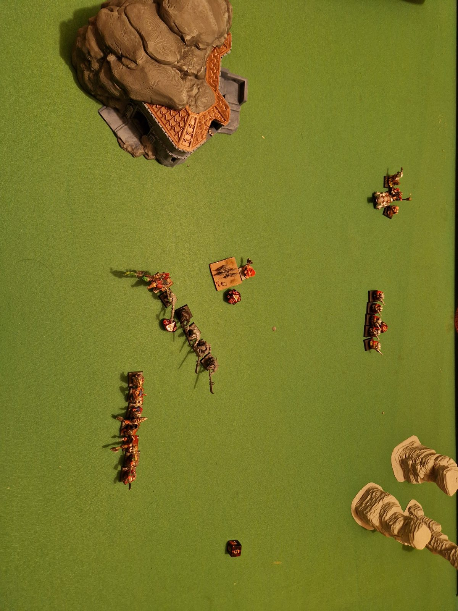

The Defence of Skull Pass
Dwarfen Mountain Holds
Skull Pass Dwarfs, led by Thane Godri Thunderbrand
Skaven
Clan Klaw, led by Skreet Verminkin
It is a balmy summer evening and the land is bathed in yellow as the dwarfs endeavour to defend their mine against menacing skaven.
Thane Godri Thunderbrand and the dwarfen defenders of Skull Pass muster their forces for pitched battle against the prowling skaven of Clan Klaw, led by Skreet Verminkin.
The Armies
Skull Pass Dwarfs
Characters — 76 pts
-
Thane
[76 pts]
- Hand weapon, great weapon, full plate armour, pistol, shield
- General · On foot · Rune of Stone
Core Units — 155 pts
-
10 Dwarf Warriors
[105 pts]
- Hand weapons, heavy armour, shields
- Veteran (champion), standard bearer, musician
-
5 Thunderers
[50 pts]
- Hand weapons, handguns, heavy armour
Special Units — 168 pts
-
5 Slayers
[73 pts]
- Hand weapons, 1x Giant Slayers
- 4x additional hand weapons, 1x great weapons
-
Cannon
[95 pts]
- Cannon, hand weapons, light armour
Clan Klaw Skaven
Characters — 51 pts
-
Skaven Chieftain
[51 pts]
- Halberd, heavy armour
- General
Core Units — 343 pts
-
3 Rat Swarms
[108 pts]
- Hand weapons (claws and fangs)
-
20 Clanrats
[127 pts]
- Hand weapon, thrusting spear, light armour, shield
- Clawleader (champion)
-
10 Stormvermin
[108 pts]
- Hand weapons, halberds, heavy armour
- Fangleader (champion)
Terrain & Deployment
The battlefield is green and verdant fields, with a dwarfen mine in the south-west and rocky pillars to the north-east. Two objectives — buried dwarfen treasure, marked by dice — sit at the midpoint of the north and south halves respectively. The Skaven hold the south of the battlefield, the Dwarfs the north.
The Dwarfs line their five Thunderers up centrally on their objective. The Slayers form up on the west side with the Cannon; the Warriors take the east, with Thane Godri fighting in their ranks.
The Skaven deploy with the Clanrats central, the Rat Swarms to the east, and the general with the Stormvermin to the west, the Skaven Chieftain fighting in their ranks.
Skreet Verminkin, the leader of the Verminous rabble, watches the dwarfs arrayed before him. Soft pink dwarf-things with sharp axes and crazy eyes on the left, armoured dwarf-things on the right… his battle line was all wrong! Not too late to change things though!
Turn 1 — Skaven
The Clanrats march forward 10". The Rat Swarms manoeuvre behind the Clanrats, aiming to face off against the Slayers. The Stormvermin hold position at long range from the dwarf rifles.
The Dwarf Thunderers score 10VP for an objective. The Stormvermin score 10VP for an objective.
Dwarfs 10 – Skaven 10.
Thane Godri eyed the Clanrats eagerly. "They're almost within reach of our axes, lads — atttaaaack!"
Turn 1 — Dwarfs
The Dwarf Warriors make a 9" charge into the Clanrats, who hold the charge. The Slayers march forward 6". The Dwarf Thunderers shoot down one Stormvermin, and the Cannon blasts down another. The Stormvermin hold their nerve.
A challenge is declared by the Clanrat Clawleader, and the dwarf Thane accepts. The Thane strikes down the Clawleader, scoring one wound plus one overkill. Two Dwarf Warriors and two Clanrats fall in the wider melee. The combat is won by the Skaven, and the dwarfs give ground; the Clanrats follow up.
The Dwarf Thunderers score 10VP for an objective. The Stormvermin score 10VP for an objective.
Dwarfs 20 – Skaven 20.

Skreet and his bodyguard were pinned down by a hail of gunfire. No use waiting for the cavalry — they would have to tough it out!
Turn 2 — Skaven
The Rat Swarms make a 10" charge into the Slayers, who hold. The Stormvermin manoeuvre behind the swarms and the Slayer melee.
The Clanrats strike down two Dwarf Warriors, and the dwarfs reply by striking down five Clanrats — three of them felled by the Thane. The Clanrats break and flee in the face of the onslaught; the dwarfs restrain themselves and regroup.
In the melee between the Slayers and Rat Swarms, three Slayers and a swarm are slain. The dwindling Slayers nonetheless drive the swarms back; the swarms give ground and the Slayers follow up.
The Dwarf Thunderers score 10VP for an objective. The Stormvermin score 10VP for an objective.
Dwarfs 30 – Skaven 30.

"Press 'em and keep pressing 'em, boys!" Godri exclaimed, eager to claim more ratmen trophies.
Turn 2 — Dwarfs
The Dwarf Warriors march forward 6" to pressure the fleeing Clanrats. The Cannon blasts away two of the fleeing Clanrats, and the Thunderers shoot down two Stormvermin.
The melee between the Slayers and Rat Swarms continues, with one Slayer and one swarm dying. The swarms lose and give ground; the Slayers follow up, driving the swarms back towards the Stormvermin.
The Dwarf Thunderers score 10VP for an objective. The Stormvermin score 10VP for an objective.
Dwarfs 40 – Skaven 40.


"Not the end I had in mind for sure, bitten to death by rats!" Slayer Kragg muttered as the rats swarmed over his dead comrades while he fended them off. Dwarf horns sounded in the distance as the ratmen took flight.
Turn 3 — Skaven
The Clanrats flee the battlefield. The Stormvermin manoeuvre to face the Dwarf Warriors. The last remaining Giant Slayer strikes a wound on the remaining Rat Swarm.
The Dwarf Thunderers score 10VP for an objective. The Stormvermin score 10VP for an objective. The dwarfs score a further 127VP for destroying the Clanrats.
Dwarfs 177 – Skaven 50.

The Result
| Dwarfs | Skaven | |
|---|---|---|
| End of Turn 1 | 20 | 20 |
| End of Turn 2 | 40 | 40 |
| End of Turn 3 (Clanrats destroyed, +127VP) | 177 | 50 |
| Slayers reduced below 25% strength (+37VP) | 177 | 87 |
Post-Match Commentary
Well, it's clear the dwarfs out-deployed the skaven, given that the Rat Swarms had to scramble to switch sides to face off against the Slayers, which then caused a massive snarl-up for the Stormvermin.
The Stormvermin never saw action, and were just blasted by missile fire all game. They seemed forced into the role of objective-holding — a role far better suited to the Clanrats. Their heavy armour was to no avail against the rifles (a slight misplay: dwarf handguns are −1AP and Armour Bane (1), not −2AP, which means the Stormvermin should have gotten a 6+ save most of the time).
The dwarf plan was straightforward, however: press them, and press them hard, which worked well. If the game had run for a few more turns, there is little doubt the Dwarf Warriors would have seen off the diminished Stormvermin and claimed the skaven objective too.